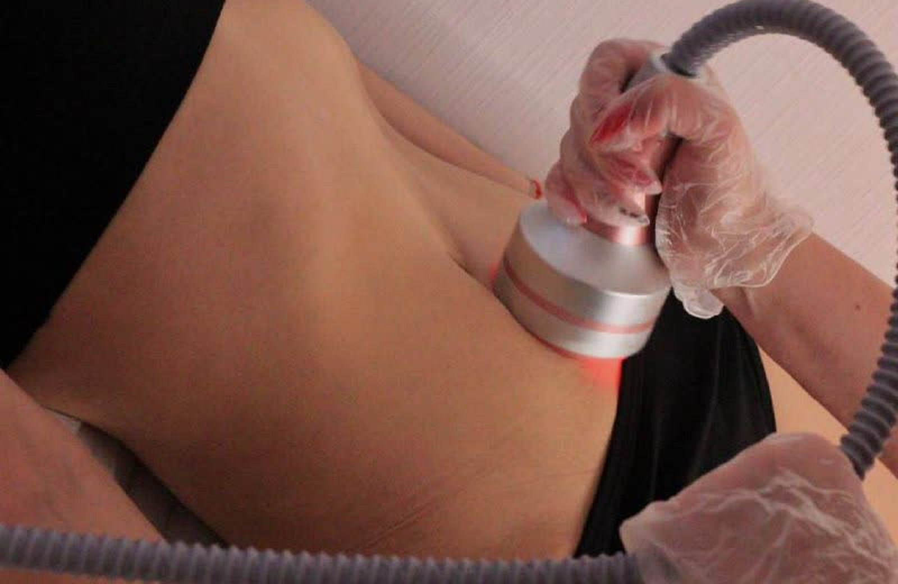
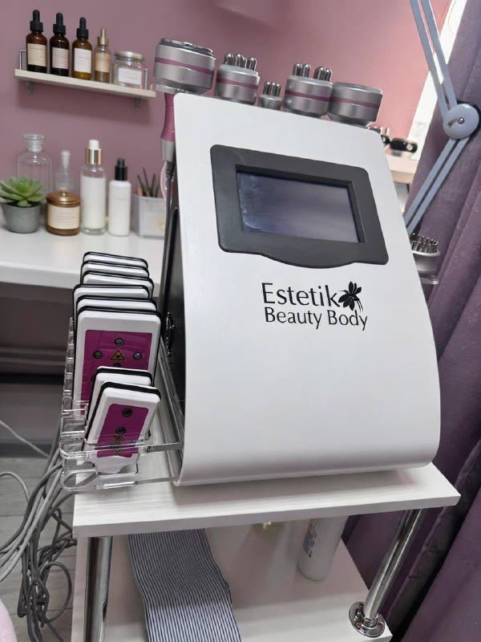

Коррекция фигуры без диет и операций: минус 0,5–2 см объёмов за один сеанс
Кавитация, RF-лифтинг, липолиз, лимфодренаж — у «Ладожской». Первый визит: любая процедура на выбор за 1 000 ₽, 30 минут.

визит1 000 ₽
- 30 минут на процедуру, без следов
- Фото до и после — на ваш телефон
- 7 методик — подберём под вашу зону
- Консультация — бесплатно
Оставляете только номер — перезвоним в рабочее время и подберём удобное окно, в том числе в выходные. Онлайн ничего не оплачиваете.
Узнаёте себя?
Эти фразы мы слышим каждый день от женщин, которые впервые заходят к нам в кабинет.
Дело чаще всего не в силе воли, а в лишней межклеточной жидкости и локальных жировых «ловушках». Их не убирают ни диета, ни планка — но убирает аппарат.
Три шага, которые тело не может сделать само
Аппаратная коррекция не «сжигает вес по весам». Она работает точечно с зоной: разбивает жир, выводит лишнюю жидкость и подтягивает кожу, чтобы не осталось пустого «мешочка».
Разбиваем жир
Кавитация и лазерный липолиз работают по локальным «ловушкам» — живот, бока, галифе, подбородок. Содержимое жировых клеток выходит наружу, клетка сдувается.
Выводим лишнее
Прессотерапия и вакуумный массаж запускают лимфу: уходят отёки и продукты распада. Именно здесь весы показывают первый минус, а ноги перестают гудеть.
Подтягиваем кожу
RF-лифтинг прогревает глубокие слои, и кожа отвечает синтезом нового коллагена. Миостимуляция добавляет тонус мышцам под ней.
Один сеанс — 30 минут. Курс подбираем индивидуально: чаще всего это 10 процедур 2–3 раза в неделю, но точное число скажем только после замеров.
Запишитесь на визит — остальное подберём вместе
Не нужно заранее выбирать методику и считать процедуры. Достаточно оставить номер: администратор перезвонит в рабочее время, расспросит про зону и покажет свободные окна.
- Консультация бесплатная — мастер разберёт зону и скажет, сколько примерно нужно прийти
- Первый визит — 1 000 ₽: разбор зоны и процедура 30 минут с фото до и после
- 30 минут на визит, без реабилитации и следов
- Ничего не подписываете на месте: решение о следующих визитах принимаете дома
Не хотите звонка — напишите, ответим текстом:
Семь методик — под вашу зону и задачу
Методики можно чередовать внутри одного курса — под зону и задачу, а не «всё подряд». Что выбрать, решаем вместе на первом визите. Полный прайс — ниже на странице.
Локальный жирКавитация1 200 ₽
 Низкочастотный ультразвук разрушает мембраны жировых клеток точечно, не задевая соседние ткани, — живот, бока, галифе. Её называют «липосакцией без ножа». 30 минут.
Низкочастотный ультразвук разрушает мембраны жировых клеток точечно, не задевая соседние ткани, — живот, бока, галифе. Её называют «липосакцией без ножа». 30 минут.
ЦеллюлитВакуумный массаж с RF1 700 ₽

Вакуум разгоняет застой в тканях, RF прогревает и подтягивает. Кровообращение улучшается, «апельсиновая корка» становится заметно ровнее. 30 минут.КонтурыЛазерный липолиз500 ₽
 Мягкая альтернатива липосакции: пластины укладываются на зону, лазер работает по жиру, который не уходит на диете. Изменения набираются за 3 месяца. 30 минут.
Мягкая альтернатива липосакции: пластины укладываются на зону, лазер работает по жиру, который не уходит на диете. Изменения набираются за 3 месяца. 30 минут.
ОтёкиПрессотерапия1 000 ₽
 Костюм со сжатым воздухом мягко «прокачивает» лимфу от стоп вверх. Минус 0,5–2 см за сеанс, с подогревом — до 2 кг лишней воды за визит. 30 минут.
Костюм со сжатым воздухом мягко «прокачивает» лимфу от стоп вверх. Минус 0,5–2 см за сеанс, с подогревом — до 2 кг лишней воды за визит. 30 минут.
Тонус кожиRF-лифтинг тела1 500 ₽
 Радиочастотный прогрев глубоких слоёв запускает выработку нового коллагена. Провисание после родов и похудения, растяжки, дряблость. 30 минут.
Радиочастотный прогрев глубоких слоёв запускает выработку нового коллагена. Провисание после родов и похудения, растяжки, дряблость. 30 минут.
МышцыМиостимуляция1 800 ₽
 Импульсы заставляют мышцы работать как на тренировке, только лёжа. Подтягивает пресс и ягодицы, ускоряет обмен веществ. 30 минут.
Импульсы заставляют мышцы работать как на тренировке, только лёжа. Подтягивает пресс и ягодицы, ускоряет обмен веществ. 30 минут.
РасслаблениеВибромассаж1 300 ₽
 Высокочастотная вибрация глубоко прорабатывает мышцы, разгоняет кровообращение и обмен веществ. Снимает напряжение после рабочего дня. 30 минут.
Высокочастотная вибрация глубоко прорабатывает мышцы, разгоняет кровообращение и обмен веществ. Снимает напряжение после рабочего дня. 30 минут.
ЛицоКосметология лицапо записи
 Уходовые процедуры, RF-лифтинг лица и карбокситерапия: тонус, цвет, лифтинг овала, работа с пигментацией и постакне. Подбираем по состоянию кожи, а не по прайсу.
Уходовые процедуры, RF-лифтинг лица и карбокситерапия: тонус, цвет, лифтинг овала, работа с пигментацией и постакне. Подбираем по состоянию кожи, а не по прайсу.
ПерманентПерманентный макияжот 7 000 ₽
 Брови, губы, межресничка и стрелки с растушёвкой. Мастер со стажем более 10 лет, только проверенные пигменты, средства для домашнего ухода — с собой. От 2 часов.
Брови, губы, межресничка и стрелки с растушёвкой. Мастер со стажем более 10 лет, только проверенные пигменты, средства для домашнего ухода — с собой. От 2 часов.
Ещё в студии: классический и лимфодренажный массаж, массаж спины в магнитно-рефлекторной технике, ламинирование ресниц.
Подберите программу и узнайте цену курса
Ответьте на пять простых вопросов — соберём программу под вашу зону, посчитаем количество процедур и стоимость курса. В подарок за прохождение — первый визит за 1 000 ₽.
Коррекция фигуры: цена за одну процедуру
Действующий прайс студии целиком — без «звоните, уточняйте». Первая процедура — 1 000 ₽ по цене знакомства, дальше — по этому списку. Методики внутри курса можно чередовать.
- Лазерный липолизЖировые «ловушки» · 30 мин500 ₽
- КавитацияЛокальный жир: живот, бока, бёдра · 30 мин1 200 ₽
- ПрессотерапияОтёки и тяжесть в ногах · 30 мин1 000 ₽
- ПрессотерапияПолный лимфодренаж · 1 час1 500 ₽
- Прессотерапия + ИК прогревОтёки и лишняя вода · 30 мин1 200 ₽
- Прессотерапия + ИК прогревДо −2 кг воды за визит · 1 час1 700 ₽
- Горячий вакуумный массажЦеллюлит и застой · 30 мин1 000 ₽
- Вакуум + RFЦеллюлит и подтяжка кожи · 30 мин1 700 ₽
- Вибрационный массажТонус и расслабление · 30 мин1 300 ₽
- Вибрационный массажВсё тело · 1 час2 200 ₽
- Вибрационный + горячий вакуумныйКомплекс против целлюлита · 1 час2 500 ₽
- RF-лифтинг телаДряблость и растяжки · 30 мин1 500 ₽
- МиостимуляцияПресс и ягодицы · 30 мин1 800 ₽
- Фотон и микротокиТонус и цвет лица · 15 мин500 ₽
Цены — из действующего прайса студии, оплата по факту визита. Сколько процедур нужно именно вам, скажем после первого визита: курс из 10 процедур закрывает большинство задач по одной зоне.
Прайс на массаж
- Классический массаж спины · 25 мин1 500 ₽
- Классический массаж спины · 40 мин2 000 ₽
- Классический массаж всего тела · 45 мин2 500 ₽
- Классический массаж всего тела · 1 час3 000 ₽
- Массаж спины в магнитно-рефлекторной технике · 25 мин1 600 ₽
- Массаж спины в магнитно-рефлекторной технике · 40 мин2 000 ₽
- Лимфодренажный массаж по зонам · 25 минот 1 000 ₽
Прайс на перманентный макияж
- Межресничка7 000 ₽
- Брови10 000 ₽
- Губы10 000 ₽
- Стрелки с эффектом теней10 000 ₽
- Коррекция межреснички3 500 ₽
- Коррекция бровей, губ, стрелок с эффектом теней5 000 ₽
- Рефреш межреснички6 000 ₽
- Рефреш бровей, губ, стрелок8 000 ₽
Мастер со стажем более 10 лет. Уходовые средства на период заживления отдаём с собой.
5,0 из 5 — по 28 отзывам на Яндекс.Картах
28 отзывов на Яндекс.Картах · награда 2ГИС стоит на стойке администратора
Действительно хорошее место. За 3 сеанса живот втянулся, нарисовалась талия.
Очень хороший мастер! Было не больно, наоборот спать захотела.
Был сегодня на сеансе прессотерапии. Отлично! Мастер Надежда знаток дела.
О чём обычно волнуются перед первым визитом
Отвечаем так же прямо, как в кабинете.
Это больно?
Нет. Кавитация ощущается как тёплый гул, RF — как приятное тепло, прессотерапия — как мягкое обжатие, лазерный липолиз не чувствуется вообще. Ни проколов, ни инъекций, ни разрезов. Многие гостьи под прессотерапию засыпают. Станет некомфортно — мастер снизит мощность сразу же.
А если результата не будет?
Поэтому первый визит и стоит 1 000 ₽: вы проверяете методику на себе, ничем не рискуя. Фото до и после снимаем на ваш телефон в одном ракурсе и взвешиваем при вас — кадры и цифры остаются у вас. Если цифры не изменились, мы прямо скажем и не станем уговаривать на курс.
Не будут ли навязывать курс?
Не будут. На первом визите мастер считает минимально необходимое количество процедур, а не максимальное. Курс можно не брать вовсе — ходить по одной, цена каждой открыта в прайсе. Мы говорим и «вам это не нужно»: если проблема только в отёках, дорогой курс липолиза вам никто предлагать не будет.
Кому нельзя? Какие противопоказания?
Не проводим при беременности и лактации, онкологии, кардиостимуляторе и металлических имплантах в зоне воздействия, эпилепсии, тромбозе и тяжёлом варикозе, острых воспалениях и температуре, декомпенсированном диабете, обострении хронических болезней. Если что-то из списка про вас — скажите мастеру до процедуры: подберём другую методику или отложим визит.
Жир потом вернётся?
Отвечаем честно: разрушенные жировые клетки не восстанавливаются, но оставшиеся могут снова увеличиться, если набирать вес. Аппарат убирает то, что не уходит от диеты и тренировок. Чтобы результат держался, достаточно не набирать вес обратно; поддерживающие процедуры раз в 1–2 месяца тоже помогают.
Стесняюсь раздеваться при постороннем
Это нормально, с этим приходят почти все. Кабинет закрытый, вы в нём одна, мастер — женщина. Выдаём одноразовый костюм; можно остаться и в своём белье. Никто не комментирует ваше тело: наша работа — работать с зоной, а не выносить приговоры.
Насколько у вас чисто?
Каждому гостю — одноразовые костюм, носочки, шапочка и бахилы. Насадки аппаратов и кушетка обрабатываются после каждого визита, расходники вскрываются при вас. Кабинет проветривается между записями — поэтому у нас нет очереди в коридоре и «конвейера».
Сколько нужно процедур?
Отёки уходят сразу — минус 0,5–2 см видно уже на первом сеансе. Для работы с жиром и кожей нужен курс: чаще всего 10 процедур по 2–3 раза в неделю. Эффект лазерного липолиза раскрывается примерно за 3 месяца. Точное число скажем после замеров.
Некогда, работаю до вечера
Визит — 30 минут без следов и реабилитации, можно в обеденный перерыв: БЦ «Лидер» стоит прямо у проспекта. Есть окна в выходные. Если не с кем оставить ребёнка — приходите вместе, у нас можно.
Как записаться и можно ли перенести?
По телефону 8 800 550-86-04, в WhatsApp, Telegram или через онлайн-запись. Перенести визит можно — просто предупредите заранее, чтобы мы успели предложить окно другой гостье.
Уютная студия, где вас помнят по имени
Мы не сеть и не «конвейер»: записи разводим по времени, чтобы вы не ждали в коридоре. Поэтому у нас тихо, никто не подгоняет, а мастер помнит, на какой процедуре курса вы находитесь.


- Одноразовые костюм, носочки, шапочка и бахилы каждому гостю
- Обработка аппаратов и кушетки после каждого визита
- Закрытый кабинет и мастер-женщина — никто не зайдёт во время процедуры
- Можно прийти с ребёнком, если не с кем оставить
- БЦ «Лидер» у проспекта, наземная парковка у здания


Работы мастера перманентного макияжа
Стаж более 10 лет, проверенные пигменты и аккуратная форма под ваши черты — без «татуажа из нулевых». Заживление сопровождаем: уходовые средства отдаём с собой.


Заберите чек-лист из 11 вопросов — и проверьте любую студию за 4 минуты, до первой оплаты
Нам важно, чтобы вы выбирали студию спокойно и с открытыми глазами — даже если выберете не нас. Поэтому мы собрали вопросы, которые стоит задать до того, как вы отдадите деньги, и отдаём их бесплатно и без условий.
Красногвардейский район, 10 минут от «Ладожской»
Приезжаете впервые? Заходите в бизнес-центр, поднимайтесь на 8 этаж — офис 813. Заблудитесь в здании — позвоните, встретим.